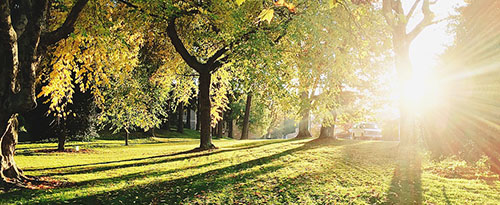
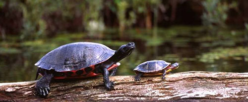
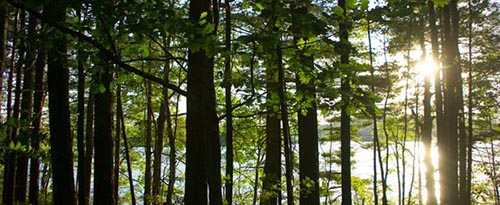
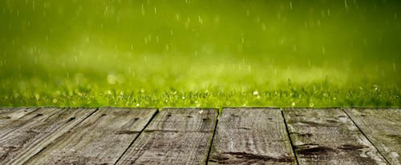
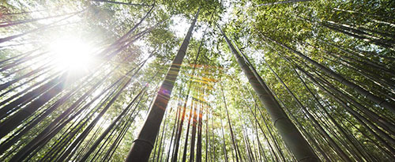
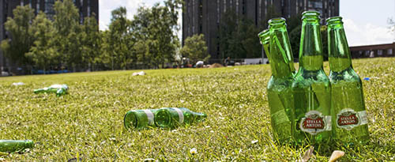
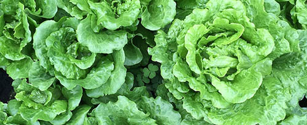
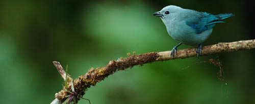
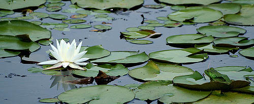

Earth Day 2016!
Every year on April 22 we celebrate Earth Day. Take this quiz to test your Earth Day knowledge.
You may only answer once. Try to fill the page with as much green as possible!
Question 1
When was the first Earth Day?

Question 2
Why was Earth Day created?

Question 3
What is global warming?
Question 4
Which of the following does not cause global warming?

Question 5
Which of the following is not caused by global warming?

Question 6
What is deforestation?

Question 7
How long does it take a plastic bottle to break down in a landfill?

Question 8
How much of our food supply is wasted?

Question 9
What does it mean if something is biodegradable?

Question 10
What percent of the Earth's water supply is drinkable?
